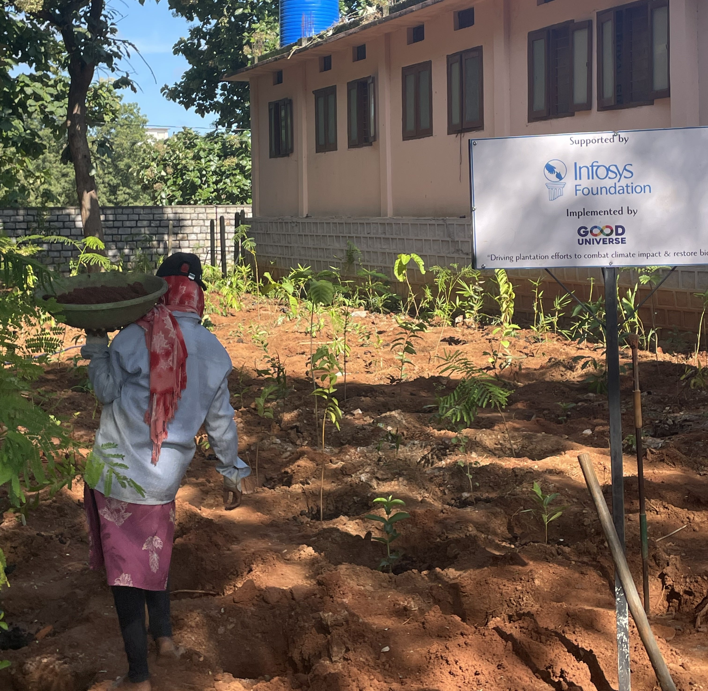
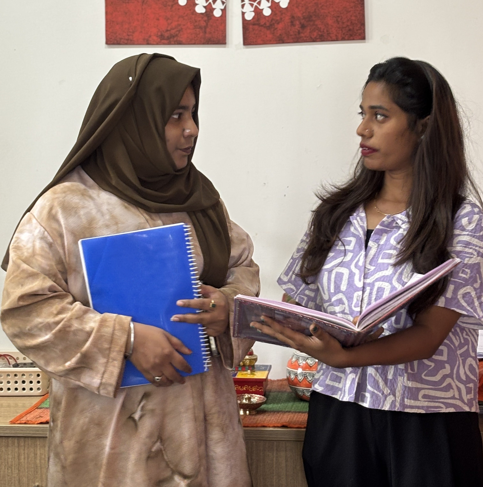
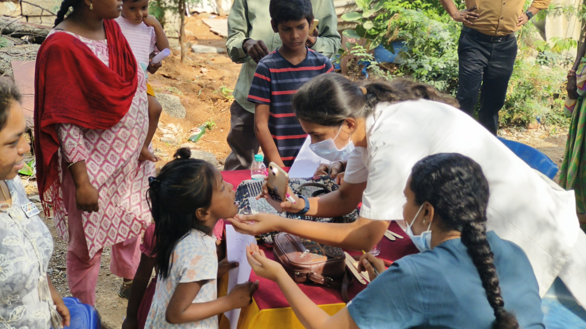

Thematic Areas
Work that lives
at the intersection
of everything urgent

Women's Health
01
Women's Health & Dignity
55,000+
Menstrual health, SRHR education, and reproductive rights reaching adolescent girls across government schools, slums, and tribal communities with honesty and without shame.

Climate Action
02
Climate Action & Resilience
18,000+ Trees
Miyawaki afforestation, sustainable menstruation, community resilience-building. Where gender equity and climate action converge from Sangareddy forests to global advocacy forums.

STEM Education
03
STEM & Future Education
30+ Schools
Hands-on STEM kits, career mentorship, and digital literacy transforming government school classrooms into innovation ecosystems where first-generation learners find futures.

Youth Skilling
04
Youth Livelihoods & Skills
84.2%
Industry-aligned vocational training across 6 tracks delivering 84.2% placement rate and pathways to sustainable economic independence for 660+ youth this year.

Community Health
05
Community Health Systems
22,000
PHC infrastructure, preventive health camps, elder care building institutional capacity that outlasts every program cycle and strengthens primary healthcare at the grassroots.


.png)